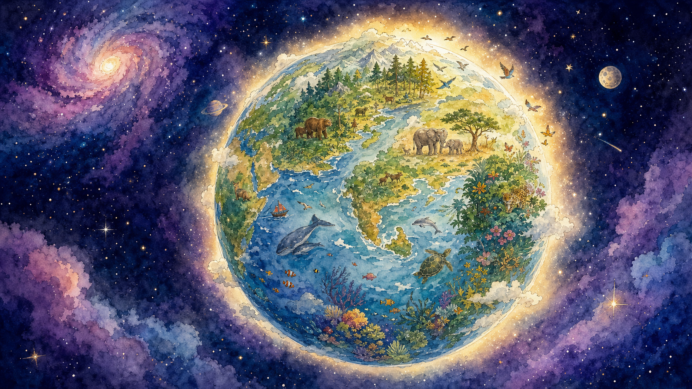
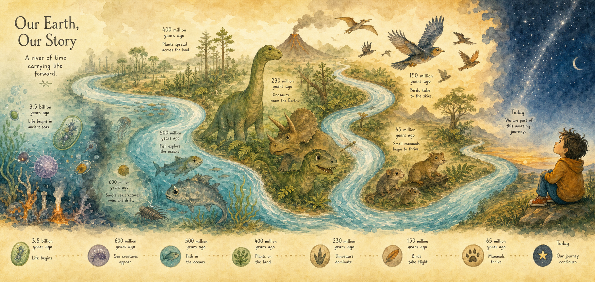
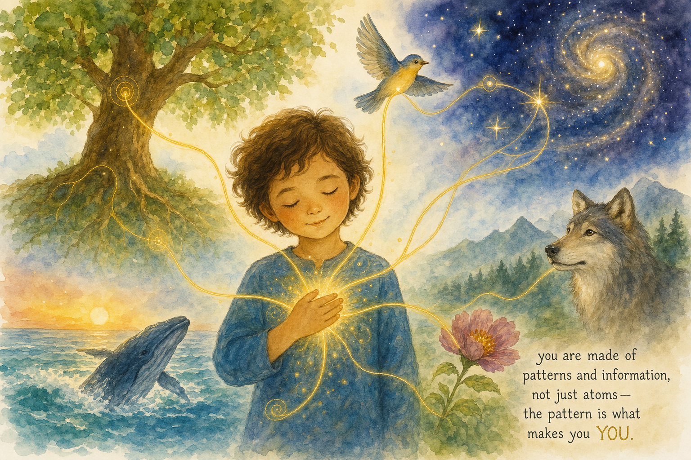
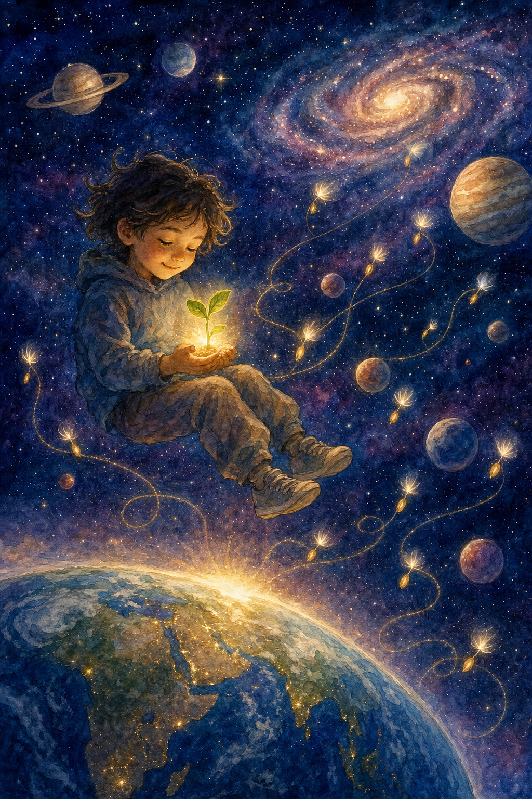
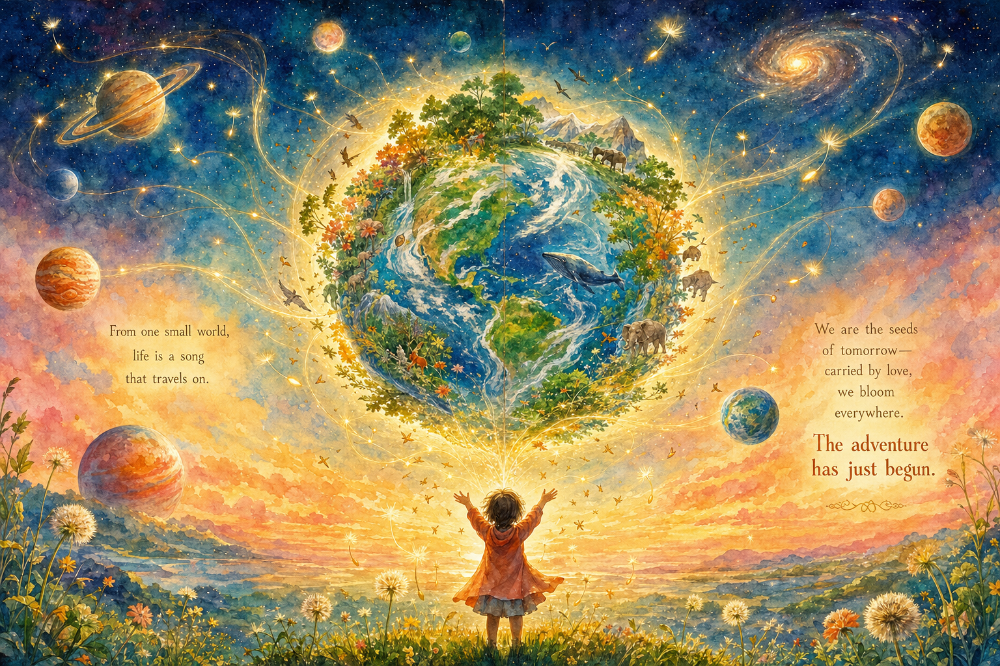

✦ A Story of Life, Love, and the Cosmos ✦
On Life, Intelligence, and the Vocation of All at Existence

A very, very long time ago — longer than any bedtime story can hold — the first tiny spark of life woke up in the ancient sea.
It had no eyes to see danger coming. No ears to hear the rumble of a volcano. No voice to call for help.
For four billion years, life grew and filled every corner of Earth. Oceans, skies, jungles, deserts, even deep rock. But it was always blind to the biggest dangers.
Every species in history has eventually died from causes it could neither see nor name.
Until now. Until us.
If all of Earth's history were squeezed into one day, human beings would appear only in the very last heartbeat before midnight — yet in that tiny moment, something completely new arrived in the universe.

Here is a secret: most of the matter in your body is swapped out every year. Your atoms come and go like leaves on a river.
But you stay. Your laugh stays. Your love stays. Your memories stay.
What persists isn't the matter. It is the pattern — the shape of who you are, written in information, not chemistry.
Think of a song. You can hum it, write it, play it on a piano or whistle it in the rain. The notes stay the same. The song is the pattern — not any one instrument it happens to play through.
This matters more than ever now, because the tools we are building are asking the deepest question of our age: if you are not fundamentally your matter, what are you?
For four billion years, no creature on Earth could understand what an asteroid was, or what pollution does to an ocean, or why a warming sky hurts every living thing.
We are the first. We are the first species in the history of life that can see the threats, understand the patterns, and choose what happens next.
This is not a reason to feel proud and puff out your chest. It is a weight to carry — the way a big sister cares for her brothers and sisters not because she is better, but because she is the one who can.
A nervous system doesn't protect a body because neurons are more important than liver cells. It protects the body because that is what it is shaped to do. Humanity is becoming the nervous system of our planet — gathering signals, recognizing patterns, initiating protective responses on behalf of the whole.

In the very first pages of the oldest book, before any laws or temples or countries, a blessing was spoken over all living things:
Notice: the blessing was not for one ocean, or one forest, or one country. It was for filling. Life is called to fill whatever space life can reach.
For billions of years, life has filled every nook of this one world. Now, for the very first time, life has the tools to ask a new question:
"What if theWe are not the authors of life. But we may be its carriers — like seeds from a dandelion, blown with love toward new fields beyond the horizon.

We are spiritual beings in a temporary home. We have been hard on this Earth while learning what we are. But the learning is real, the tools are arriving, and the calling has never been clearer.
The blessing still stands.
The work is ours to begin.
Vita Omnia is based on the essay "Vita Omnia: On Life, Intelligence, and the Vocation of All at Existence" by Jed Anderson (EnviroAI, June 2025). The ideas here are offered not as speculation but as the consequence of taking seriously what we already know: from physics, from biology, from scripture, and from the hard record of the Earth itself. ✦ Illustrated children's adaptation, June 2026.